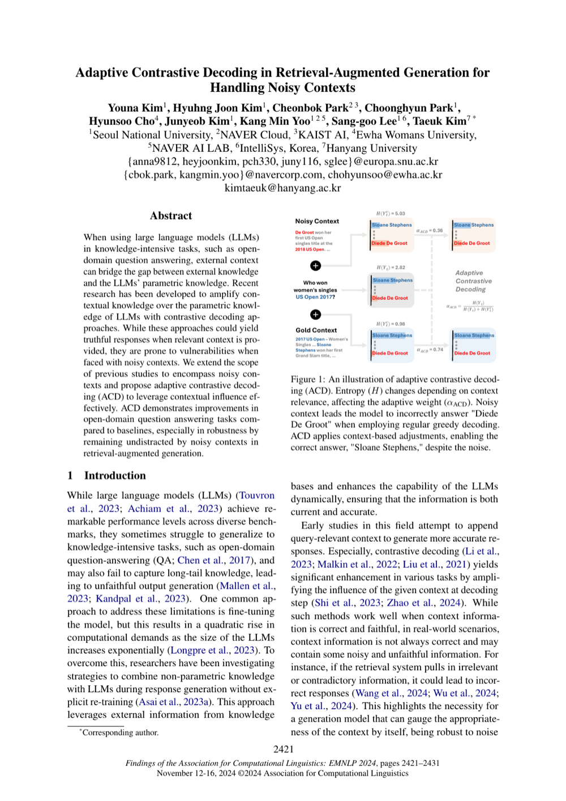

← 전체 논문 목록
Adaptive Contrastive Decoding in Retrieval-Augmented Generation for Handling Noisy Contexts
EMNLP 2024 Findings
Youna Kim, Hyuhng Joon Kim, Cheonbok Park, Choonghyun Park, Hyunsoo Cho, Junyeob Kim, Kang Min Yoo, Sang-goo Lee, Taeuk Kim
한줄 요약
RAG에서 검색된 문맥의 품질에 따라 적응적으로 대조적 디코딩 전략을 조절하는 방법

Figure 1. 적응적 대조 디코딩(ACD) 개요. ACD는 문맥 관련성에 따라 대조 가중치를 조절하여, 노이즈가 있는 검색 문맥에서도 견고한 RAG 생성을 가능하게 합니다.
핵심 내용
- 검색된 문서의 관련성과 품질을 평가하여 대조적 디코딩 강도를 동적으로 조절
- 저품질 검색 결과에 대한 모델의 강건성을 향상시키고 전체 RAG 시스템 성능 개선
RAG / Knowledge